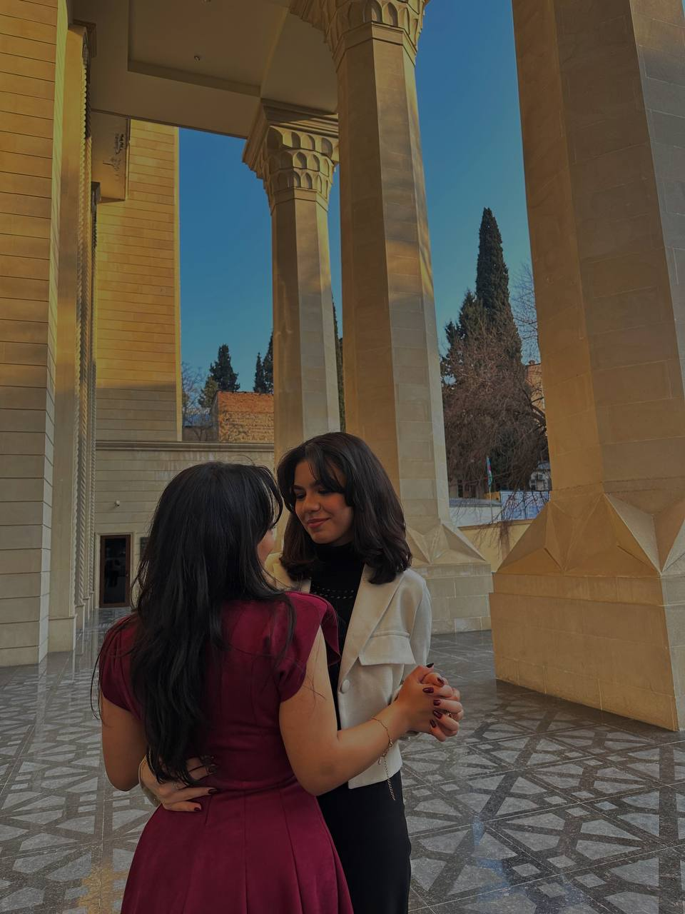
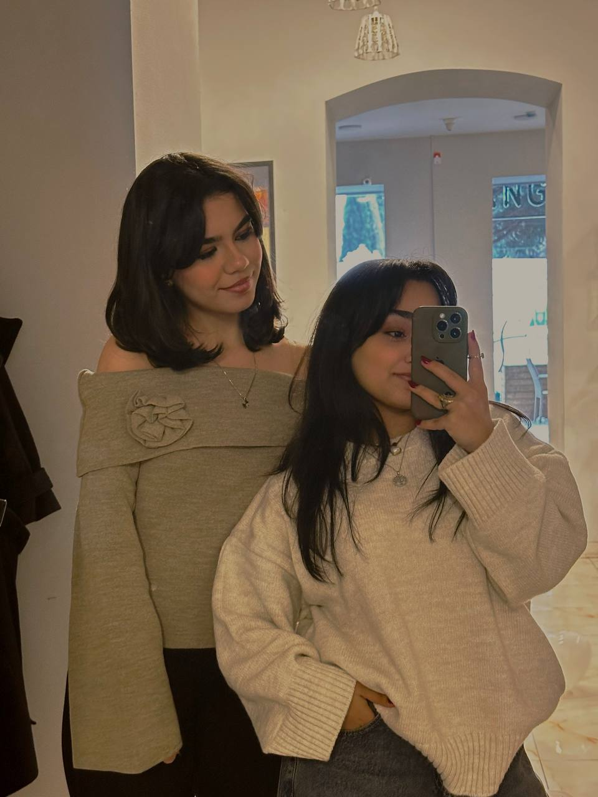

🩷

🩷

🩷
🩷

Yadında kitab oxuda(☹️) qolumuzda hayat ağacı bilekliklərimiz, bir-birimizə söykənərək mənim təzə aldığım mavi qulaqlıqda bir mahnıya qulaq asmışdıq.
Onu qoş və yazılarımızı bu mahnıyla birgə oxu❤️🩹

🩷

🩷

Mən dostluğu, sirdaşlığı, bir insanin dərdini öz dərdin bilməyi, ona can yandırmağı, bie insannan daimi danışmağı, onun en sevdiyi rəngden tut ən böyük dərdinə qədər hər şeyini bilməyi, sevdiyin insan üçün çabalamağı və onun da sənə sevgisi varsa illa sənə, addımlarına qarşılıq verəcəyini, dəyər verdiyin biri üçün fədakarlıq etməyi və ən əsası onu hər şeydən çox sevməyi ilk dəfə sənnən, ilişkimizdən öyrəndim.
Mən ruhumu, onu bəsləməyi, tanımağı, bir çox hallarda onu üstün tutmağı, ona özəl yanaşmağı, onu hiss etmədikdə belə bunun üçün çabalamağı, onu unutmamağı ilk dəfə səndən öyrəndim.
Mən birinə ruhunla bağlanmağı, ona, onun ruhuna, baxışlarına təmas etməyi, birinə duyğusal olaraq yaxınlıq duymağı və ən əsası bunları sevməyi ilk dəfə səndən öyrəndim.
Qısacası,
Sen benim ilklerim💚
🩷
🩷
Artıq 19 yaşını pis, yaxşı, bəzən çətinliklər yaşıyaraq, bəzən gülərək(halına) bitirdin. Bu yaşının sənə nələr qatdığını, necə böyütdüyünü ən gözəl sən bilirsən. Mənim arzum odur ki, 20 yaşında bu il aldığın dərslərin, kədərli anların bəhrəsini görər, 20-ci yaşında bu yaşa qədərki 19 ildə heç gelmədiyin qədər gülər(bu səfər halına yox), heç olmadığın qədər xoşbəxt olar və bu günə kimi yaşadığı pis anları gülərək xatırlayıb onların sənə qatdiqlarını görüb, anlayaraq şükür edə bilərsən. İnşallah bu yaşında daha az şikayət edərsən(heç varyantı mümkün deyil😙). Bu günə qədər və bu gündən sonra mənə qatdığın və ya qatacağın hər şey üçün sənə təşəkkür edirəm.Səni çox sevir, sımmsıkı qucaqlıyıram, Leyloii❤️🩹